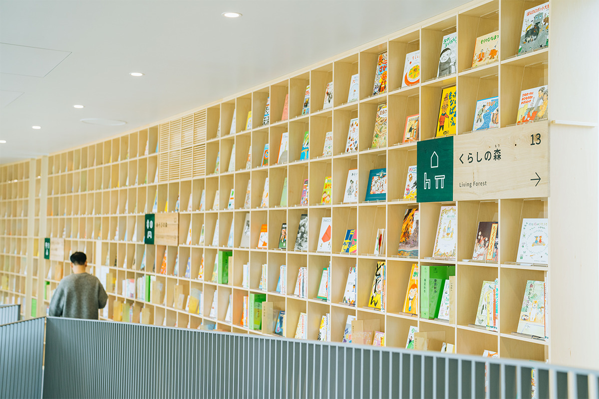
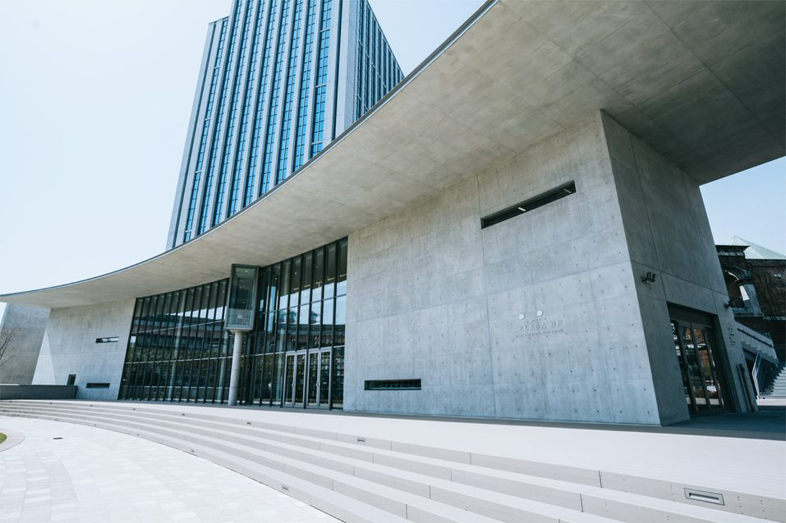
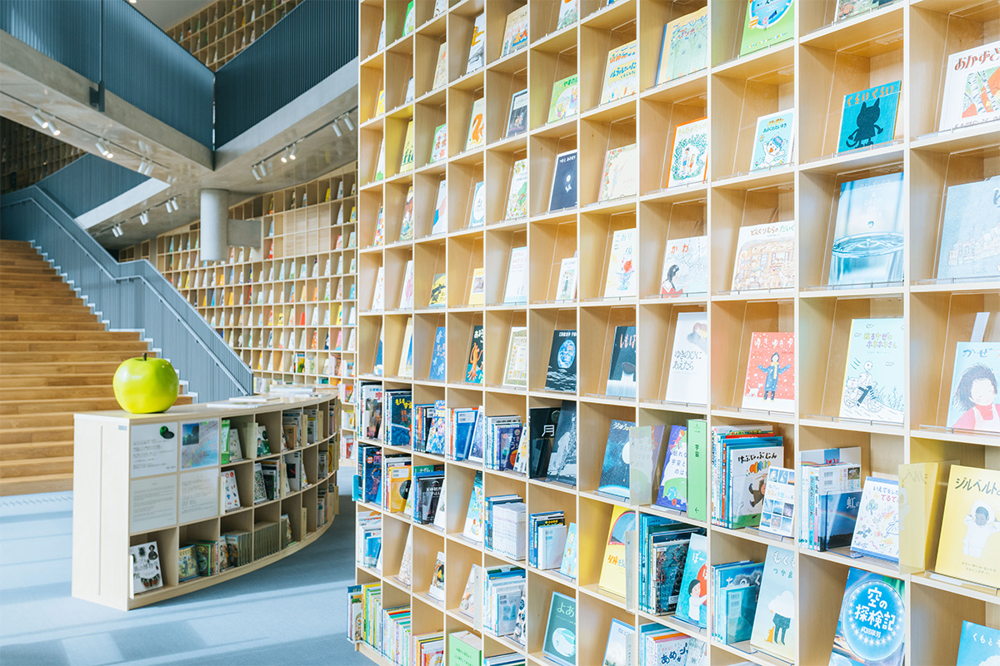
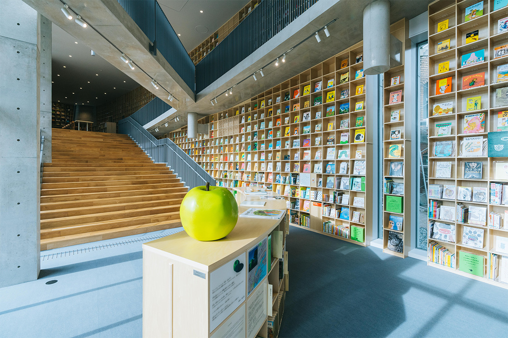
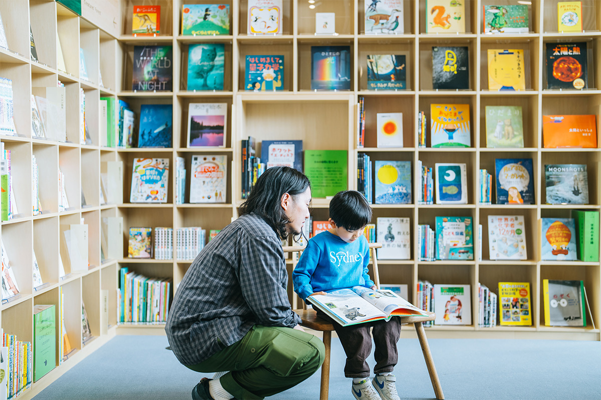
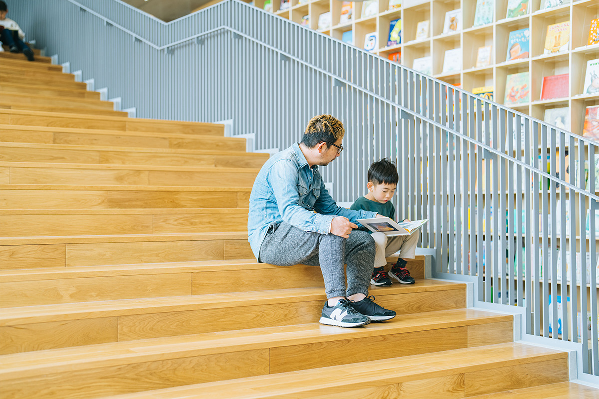
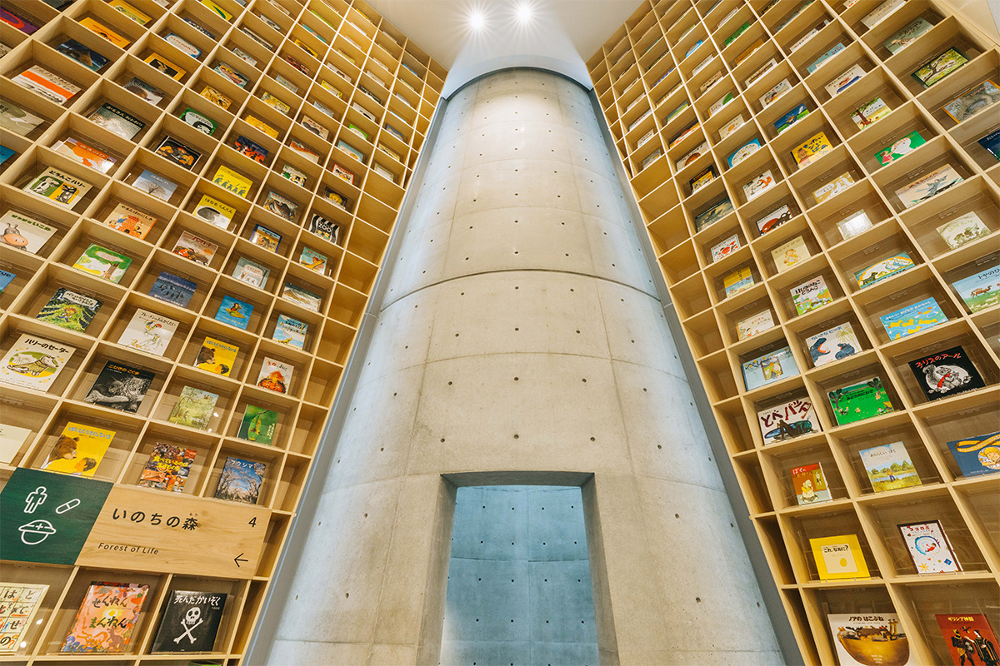
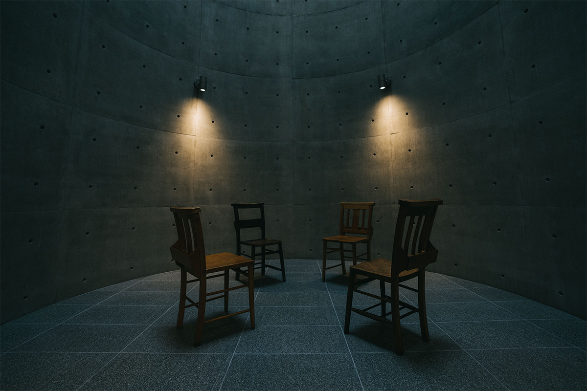
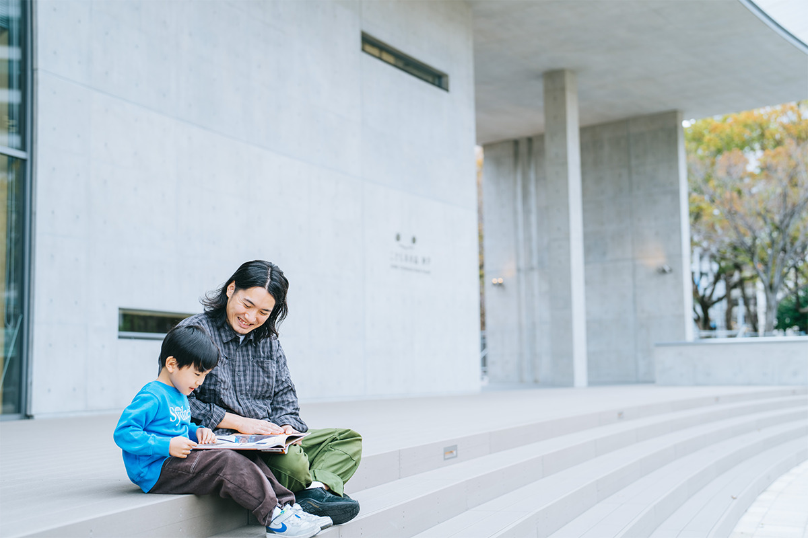

Префектура Хёго · Кобе · архитектура
«Лес книг» в Кобе: детская библиотека, которую городу подарил Тадао Андо

Детские библиотеки «Лес книг» появляются в Японии на пожертвования архитектора Тадао Андо. Третья из них открылась в 2022 году в Кобе, в городском парке недалеко от порта.
Идея
Открыть книгу, чтобы открыть мир
«Хочу построить библиотеку для детей»: с этой мыслью Тадао Андо дал деньги на детские библиотеки. Первая появилась в Осаке, на острове Накано-сима, вторая в городе Тоно в префектуре Иватэ. Третьей стал «Лес книг» в Кобе, открытый в 2022 году.
Здание стоит в Хигаси-Юэнти, парке в центре Кобе рядом с мэрией и портом. Для горожан это особое место: здесь вспоминают жертв землетрясения 1995 года. Библиотеку задумали так, чтобы дети свободно брали книги посреди городского парка, узнавали историю и культуру Кобе, на опыте землетрясения понимали цену жизни и учились придумывать своё. У проекта пять опорных идей: сохранить память о землетрясении и его уроки, разбудить любопытство через природу парка, растить фантазию свободным пространством, познакомить детей с историей Кобе и связать разные поколения с городом у воды.
Книги расставлены по 15 темам, и эту классификацию город придумал сам. Здесь есть книги о Кобе и о землетрясении, книжки с картинками, детская литература, энциклопедии, альбомы по искусству и издания из других стран: всё, что показывает, насколько разнообразен мир. Домой книги не выдают, зато в хорошую погоду с ними можно выйти на деревянную террасу или в парк.

Снаружи это двухэтажный объём из неотделанного бетона, по которому Андо узнают сразу. Фасад целиком стеклянный, и с улицы видны главная парадная лестница и огромные книжные стеллажи.

Табуреты и таблички с названиями тем делали по одной вручную из местного дерева, в том числе из деревьев, которые росли на горе Рокко, символе Кобе. Авторы хотели, чтобы дети читали в окружении добротной мебели из натуральных материалов и чувствовали себя здесь уютно.

В зале стоит «Зелёное яблоко», которое Андо придумал как символ юности. Его вдохновило стихотворение «Юность» американского поэта Сэмюэла Ульмана (1840–1924): «Юность не период жизни, а состояние души». Андо объясняет так: стремиться нужно не к сладкому спелому красному яблоку, а к зелёному, незрелому и кислому, зато полному надежды на завтра.
Слово
Библиотека для детей Кобе

«Я считаю Кобе самым красивым и удобным для жизни городом Японии. Я сказал мэру: пусть дети этого города читают книги и отсюда улетают в большой мир. Так и появился „Лес книг“. Сейчас время смартфонов, и про чтение забывают. Пусть смартфона станет вдвое меньше, а здесь будет место, где читают и думают. Чтобы дети, которые живут на этой Земле, росли, прошу вас всех и дальше поддерживать библиотеку»
Тадао Андо, архитектор

Почётным директором библиотеки стала известная японская актриса. Она напоминает, что детских книг о землетрясении до сих пор мало.
«То, что библиотека появилась именно в Хигаси-Юэнти, особом месте для жителей Кобе, очень важно. Здесь можно узнать, что случилось в Кобе. Дети расскажут об этом дома, в школе тоже будут об этом говорить, и землетрясение останется в сердце каждого, а не только в цифрах. Я об этом почти молюсь»
почётный директор библиотеки
Внутри
Добро пожаловать в «Лес книг»
Сразу за входом начинается настоящий лес: стены от пола до потолка заняты книжными полками. Начиная с пятой полки книги стоят обложкой к залу. Так любой ребёнок, даже тот, кто ещё не умеет читать, видит картинку и думает: «Вот эту хочу!». Верхние книги закреплены на случай землетрясения, а такие же экземпляры стоят внизу, чтобы их можно было взять в руки.

Комната отдыха
Высокая круглая комната отдыха, пожалуй, больше всего в здании похожа на Андо. Свет из верхнего окна заполняет пространство, и здесь тихо и торжественно, как в церкви. Создатели думали, какая мебель подойдёт такому месту, и выбрали церковные стулья. У таких стульев на спинке есть ящик, куда в церкви кладут Библию. Здесь в ящиках лежат книги, которые хочется дать детям почитать в тишине. Подборка меняется каждую неделю, и какие книги окажутся в ящиках, вы узнаете, только когда придёте.

Читать можно и в зале, и снаружи: в хорошую погоду книгу разрешают вынести в парк или на деревянную террасу. Если поедете в Кобе всей семьёй, загляните сюда.

«Лес книг», детская библиотека Кобе
- Адрес
- префектура Хёго, Кобе, район Тюо, Кано-тё, 6-1-1
- Телефон
- +81 78-325-1125
- Часы работы
- 9:30–17:00
- Выходные
- понедельник (если это праздник, то следующий будний день)
- Цены / Вход
- в 2022 году вход был по предварительной записи через форму на сайте
Фото: Junpei Iwamoto (DOR).